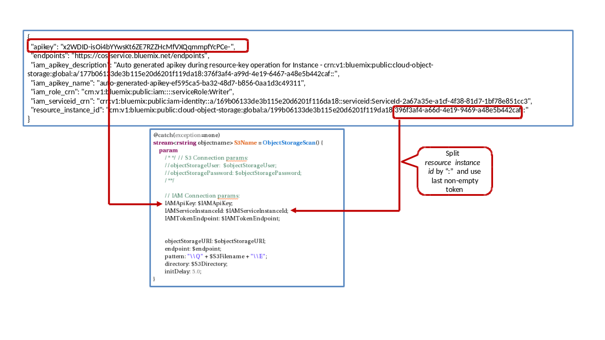

IBMStreams com.ibm.streamsx.objectstorage Toolkit > com.ibm.streamsx.objectstorage 1.1.1 > com.ibm.streamsx.objectstorage > ObjectStorageSource > Supported Authentication Schemes
The operator supports IBM Cloud Identity and Access Management (IAM) and HMAC for authentication.
IAMServiceInstanceId
IAMTokenEndpoint - IAM token endpoint. The default is https://iam.bluemix.net/oidc/token.
The following diagram demonstrates how IAMApiKey and IAMServiceInstanceId can be extracted from the COS service credentials:

For HMAC authentication the following authentication parameters should be used:
objectStoragePassword
For S3-compliant COS use AccessKeyID for 'objectStorageUser' and SecretAccessKey for 'objectStoragePassword'.